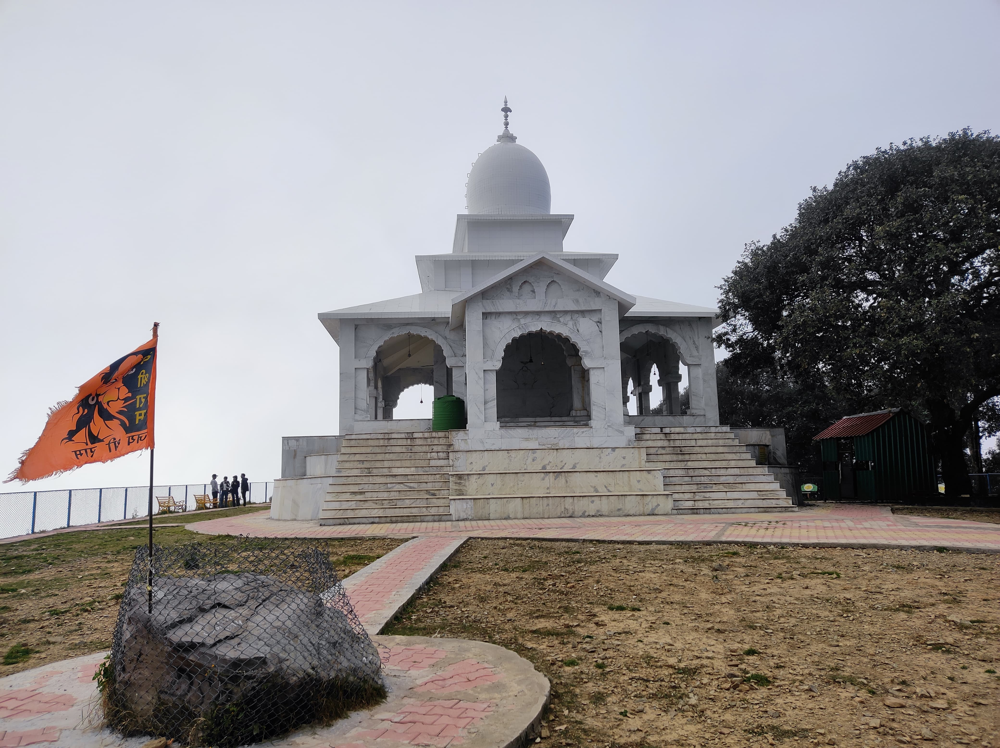

- 
Bhadraj Temple
The charming Bhadraj Temple honours Lord Bal Bhadra, also called Balram, the brother of Sri Krishna. It is situated in the Bhadraj area of Mussorie. The Bhadraj Temple is perched atop a hill, and the atmosphere and air there are serene and tranquil.In addition to its religious significance, the temple is most famous for the arduous 11-kilometer hike required to get there. Known as the Milkman's Trail, it begins in Dehradun at Cloud's End and provides breathtaking vistas of the environs.Bhadraj Temple is a very sacred temple that is part of the Badrinath Temple. It is thought that pilgrims who visit the Bhadraj Temple are bestowed with the same blessings as those who visit the Badrinath Temple. Devotional prayer in the temple grants the wishes of the praying pilgrims.
Situated on a hill, Bhadraj Temple commands sweeping views of the Chakrata mountains, Jaunsar Bawar, and the breathtaking Doon Valley. Similar to the Badrinath Temple, it is said that people who pray here are granted their deepest desires. Many people give butter, ghee, and milk to the idol of Balram, who can only be purified by milk. The temple holds an annual fair from August 15 to August 17. Thousands of devotees attend the event to offer prayers and view local cultural and traditional exhibitions.
- In the Dwapar Yug, following the great Mahabharat conflict, the Bhadraj Temple was built. All the gods, monarchs, and warriors retired to their places of devotion after the fight. For penance, Lord Balram also set off on his pilgrimage. He was overjoyed when he found this stunning location in Binhar.
- Here, Lord Balram spent a considerable amount of time in meditation.Once he had done his penance, he went to Badrinath and taught the shepherds basic fighting tactics.
- The villagers were given the assurance by Lord Balram that he would return to Bhadraj in the shape of a stone to look after them, the cows, and themselves. A few years later, Nandu Mehra heard someone order him to come out of the Yamuna when he was searching the banks for ayurvedic medicines. He asked his friends to assist him with the digging since he was afraid. A statue of Lord Balram was discovered.
- The voice told Nandu to put the statue wherever it feels heavy because he was hesitant to handle such a large and massive statue. When the statue got to Bhadraj, it stopped being so light and started to become exceedingly heavy. And the temple was situated there.Nandu was thirsty as he made his way to the mountaintop, and the voice instructed him to clear the area of mud and stones. When he did, he discovered water there. The location is still there today. It is situated near Binhar's Matogi village, where the water level is constant all year round.